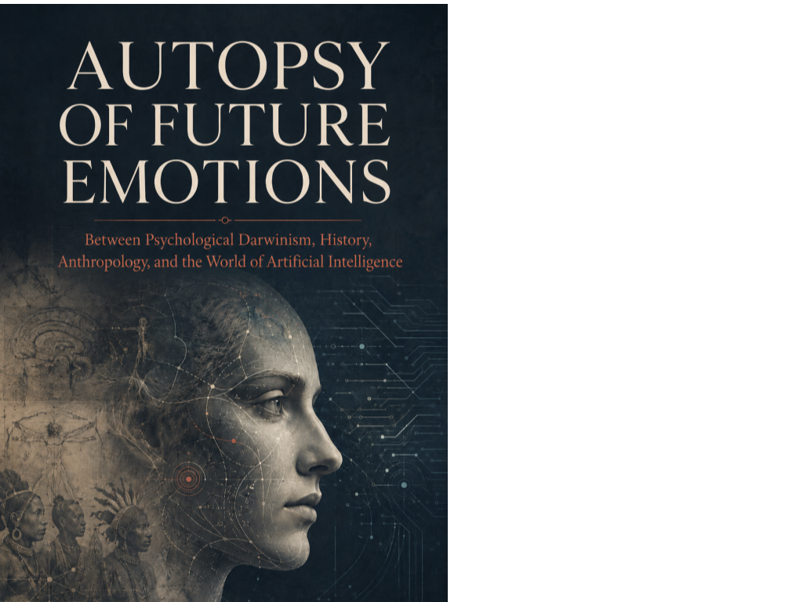

Emotion · Axiologic Research Editions
Autopsy of Future Emotions
Before AI transforms society, it may transform the private weather by which society is felt.
An atlas for feelings not yet named
What happens to human emotion when artificial intelligence becomes persistent in work, communication, status competition and intimate interaction? Autopsy of Future Emotions approaches that question carefully: emotion has no single settled definition, technology moves faster than evidence, and a plausible story is not yet a forecast.
From shame and cooperation to job loss, agent relationships and simulated affect, the book traces the emotional infrastructure beneath a changing social order. It asks whether new affects may emerge, and whether we can learn to recognize them before platforms, workplaces and persuasive agents learn to exploit them.
Feeling is part of the system
Can AI have emotions? The book instead asks what simulated emotion does to human communication, attachment and expectation.
Why call emotion infrastructure? Because emotions coordinate attention, status, trust, care and conflict long before they become private vocabulary.
An automated world changes not only what people can do, but what it costs to feel like someone.
A deliberate affective ecology
This is for readers who want to approach future emotion without either romanticizing biology or mistaking a chatbot’s performance for a settled social fact. It keeps the degrees of certainty visible while opening a richer question: what emotional conditions should a technological civilisation deliberately preserve?